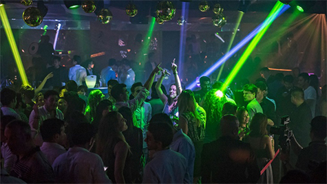
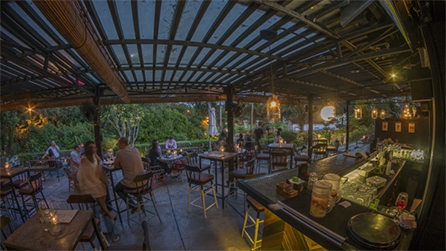
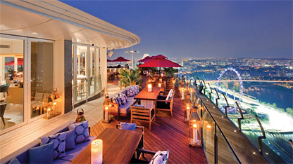
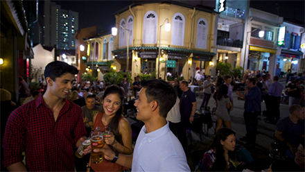

미식가와 만나는 곳
미슐랭 스타를 받은 레스토랑에서 산해진미를 맛보세요. 하지만 한 가지만 너무 많이 드시지는 마세요. 오랜 세월자리를 지켜 온군침 도는 길거리 음식부터 수상 경력이 있는 국내 셰프의 훌륭한 요리에 이르기까지 꼭 맛보아야 할 음식이 아직 많이 남아 있으니까요.
모든 식사는 색다른 것을 시도해 볼 좋은 기회입니다. 매번 새로운 분위기와 새로운 방식으로 식사 시간을 즐겨보세요. 음식에 열정이 있는 분이라면, 이 곳에서 맛 평론가, 식도락가, 제빵사, 셰프, 칵테일 전문가, 쇼콜라티에, 테이스트메이커 등 다양한 식도락가들을 만날 수 있습니다.
도시내 다이닝
싱가포르는 미식가와 각계각층의 사람들을 위해 믿기지 않을 만큼 다양한 다이닝 옵션을 제공합니다. 맛있는 식사를 원하신다면, 어떠한 취향과 예산도 만족시켜 주는 요리가 있습니다. 길거리의 현지 음식점은 싱가포르의 다양한 문화가 혼합된 맛있는 음식을 제공하는 반면, 활기 넘치는 고급 레스토랑 구역은 많은 유명 셰프 레스토랑을 선보이는 등 세계적으로 흥미진진한 볼거리가 풍부한 곳 중의 하나로 각광받고 있습니다.
-
락사
락사 수프는 향신료와 코코넛 밀크가 적절히 조화되어 독특하고 맛이 뛰어난 누들수프입니다.
-
칠리 크랩
칠리 크랩은 육즙이 많은 게살을 볶아 톡 쏘는 그레이비 소스로 양념을 낸 음식으로 곳곳에서 즐기실 수 있습니다.
-
치킨 라이스
싱가포르의 '국민' 음식입니다. 아주 맛있는 이 음식은 소박한 호커 센터에서 고급 레스토랑까지 거의 모든 음식점에서 찾아볼 수 있습니다.
-
프라이드 캐롯 케이크
싱가포르 현지 프라이드 캐롯 케이크는 이름과는 달리 붉은 기가 전혀 없으며 검정 또는 흰색의 단색으로 구성된 별미입니다.
-
꼭 먹어봐야 할 2016
미슐랭 빕 그루망 요리싱가포르의 첫 미슐랭 가이드에서 빕 구르망을 수상한 이들 34개 레스토랑 및 호커 노점으로 가보세요.
-
채식주의자를 위한
싱가포르싱가포르에서 훌륭한 채식 레스토랑은 찾기 쉽습니다. 단, 어디로 가야 하는지 안다면 말이지요. 잊지 못할 고기 없는 연회를 즐길 준비 되셧나요?
-
일일 싱가포르
푸드 투어아침 9시부터 늦게까지, 이 음식 파라다이스에서 놓치지 말아야 할 최고의 먹거리 경험을 위한 여러분의 일일 푸드 가이드가 바로 여기 있습니다.
-
현대적 맛이 가미된
로컬 음식현대적 맛이 가미된 인기 로컬 푸드를 시식하면서 미각 여행을 떠나보세요.
싱가포르의 나이트라이프 현란한 음악이 울려 퍼지고 음료와 엔터테인먼트까지 해결할 수 있는 싱가포르의 나이트라이프 거리에서 24시간 언제라도 파티를 즐길 수도 있고 좀 더 조용하게 밤을 보낼 수 있습니다. 초대형 클럽에서 세계적인 수준의 DJ 쇼 리듬에 맞추어 춤을 추거나 분위기 있는 칵테일 바에서 원하는 대로 주문한 칵테일을 즐기거나 라이브 밴드 공연을 본 뒤 코메디 클럽에서 마음껏 웃어 보세요. 편안한 속도에 맞추어 볼륨을 높이거나 낮출 수 있습니다. 선택의 자유를 제한하는 것은 오직 상상력과 다음 날 회복하는 데 걸리는 시간뿐입니다. 더 알아보기
-

싱가포르의 나이트라이프
바에서 열기를 식히든 밤이 깊도록 춤을 즐기든, 누구나 황혼이 진 후에 즐길 거리를 발견할 수 있습니다.
-

뎀시 힐 및 홀랜드 빌리지 인근 바
싱가포르에서 캐쥬얼 하면서도 느긋한 분위기의 장소에서 한 잔 기울이고 싶다면 홀랜드 빌리지 (Holland Village)..
-

플러톤 및 마리나 베이 에서 즐기는 한 잔
싱가포르에 어떤 바가 있는지 찾아보고 있나요? 이 가이드와 함께 플러톤, 콜리어 키, 마리나 베이 지역에 위치한...
-

클럽 스트리트 및 안시앙 힐의 바
안시앙 힐 및 클럽 스트리트 술집 목록을 참고해 여러 바를 탐방하며 싱가포르에서 한 잔 즐길 수 있는 장소를 발견해...
-
맛집 추천
아이들이 좋아할 만한 레스토랑
-
볼거리와 즐길거리
싱가포르에서 다이닝과 쇼핑으로 하루 보내기